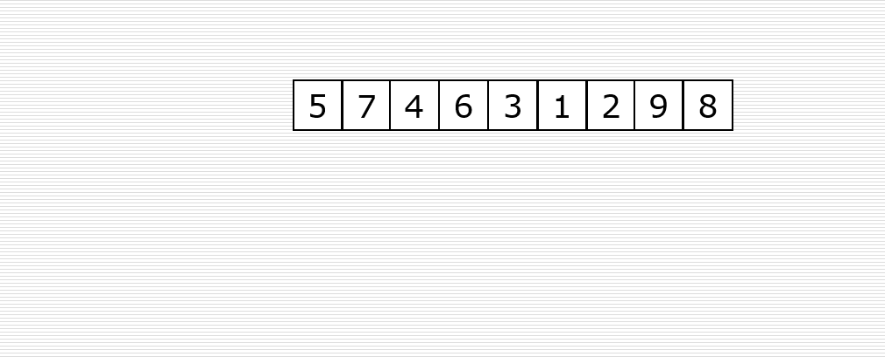
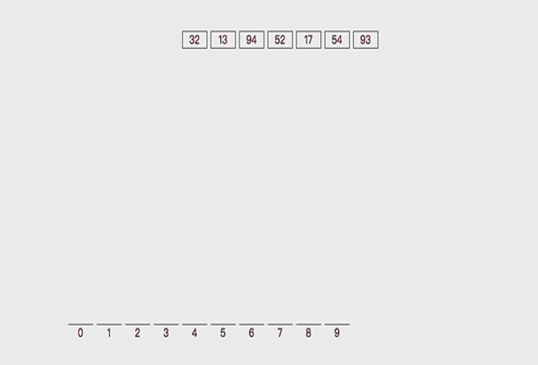

原文出处:本文由博客园博主Nolinked提供。
原文连接:https://www.cnblogs.com/pungchur/p/12092813.html
原文连接:https://www.cnblogs.com/pungchur/p/12092813.html
希尔排序
希尔排序是一个叫希尔的数学家提出的一种优化版本的插入排序。
- 首先取一个整数d1=n//2，将元素分为d1个组，每组相邻元素之间的距离为d1，在各组内进行直接插入排序。
- 取第二个整数d2=d1//2，重复上述分组排序过程，直到di=1，即所有元素在同一组内进行直接插入排序。
- 希尔排序是使整体数据越来越接近有序；最后一趟排序使得所有数据有序。

实现
# 希尔排序
def shell_sort(li):
n = len(li)
gap = n // 2
while gap > 0:
for i in range(gap, n):
temp = li[i]
j = i - gap
while j >= 0 and li[j] > temp:
li[j + gap] = li[j]
j -= gap
li[j + gap] = temp
gap //= 2算法分析
- 时间复杂度：O(n1.3)
- 最好时间复杂度：O(n)
- 最坏时间复杂度：O(n2)
- 空间复杂度：O(1)
- 稳定性：不稳定
计数排序
计数排序是一种非比较性质的排序算法，元素从未排序状态变为已排序状态的过程，是由额外空间的辅助和元素本身的值决定的。
计数排序过程中不存在元素之间的比较和交换操作，根据元素本身的值，将每个元素出现的次数记录到辅助空间后，通过对辅助空间内数据的计算，即可确定每一个元素最终的位置。
- 根据待排序集合中最大元素和最小元素的差值范围，申请额外空间；
- 遍历待排序集合，将每一个元素出现的次数记录到元素值对应的额外空间内；
- 对额外空间内数据进行计算，得出每一个元素的正确位置；
- 将待排序集合每一个元素移动到计算得出的正确位置上。

实现
def count_sort(li, max_num=100):
count = [0 for _ in range(max_num + 1)]
for val in li:
count[val] += 1
li.clear()
# 表示i这个数出现了v次
for i, v in enumerate(count):
for _ in range(v):
li.append(i)算法分析
假定原始数列的规模是N
最大值和最小值的差是M
计数排序的时间复杂度是O(N+M)
如果不考虑结果数组，只考虑中间数组大小的话，空间复杂度是O(M)
基数排序
基数排序（英语：Radix sort）是一种非比较型整数排序算法，其原理是将整数按位数切割成不同的数字，然后按每个位数分别比较。
由于整数也可以表达字符串（比如名字或日期）和特定格式的浮点数，所以基数排序也不是只能使用于整数。
多关键字排序：现在有一个员工，要求按照薪资排序，年龄相同的员工按照按照年龄排序。
先按照年龄进行排序，再按照薪资进行稳定的排序。
对32，13，94，52，17，54，93进行排序，是否可以看作多关键字排序？

实现
# 基数排序
def radix_sort(li):
max_num = max(li)
i = 0
while (10 ** i <= max_num):
buckets = [[] for _ in range(10)]
for val in li:
# i=0 个位 i=1 十位 i=2 百位 ..
digit = val // (10**i) % 10
buckets[digit].append(val)
li.clear()
for bucket in buckets:
for val in bucket:
li.append(val)
i += 1算法分析
- 时间复杂度：O(kn)
- 最好时间复杂度：O(kn)
- 最坏时间复杂度：O(kn)
- 空间复杂度：O(n+k)
- 稳定性：稳定
~>.<~